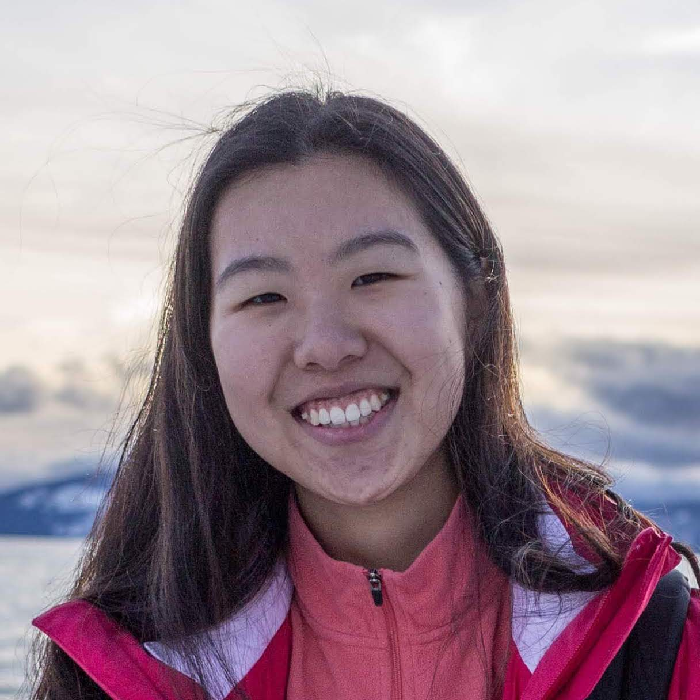

📖 my first chapbook paper dolls is out now! (september 2026)
🏆 brooklyn poets nominated my poem for a pushcart prize! (december 2025)
📰 i joined slate's mini crossword roster: check out my work here. (november 2025)
🏳️🌈 i'm a 2025 lambda fellow in the poetry cohort led by kay ulanday barrett! (august 2025)

kaitlin hsu 徐欣 is a queer taiwanese writer and editor from the bay area. she’s the author of the chapbook paper dolls (sibling rivalry press, 2026). she studied english (poetry) and computer science (biocomputation) at stanford and is currently a poetry mfa candidate at the michener center.
some things she's thinking about: crosswords, literature in translation, organizing & negative capability.
drop a line at snickerdoodle@my.utexas.edu. 💌